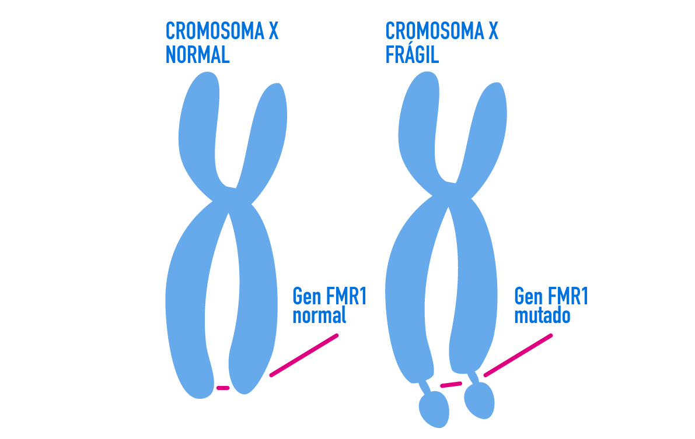

Os sintomas da síndrome do X frágil são causados por uma anomalia em um gene específico do cromossomo X. Algumas variantes em um gene não causam nenhum problema e algumas causam somente poucos problemas ou problemas leves. Outras variantes causam doenças graves, como anemia falciforme, fibrose cística e distrofia muscular.
